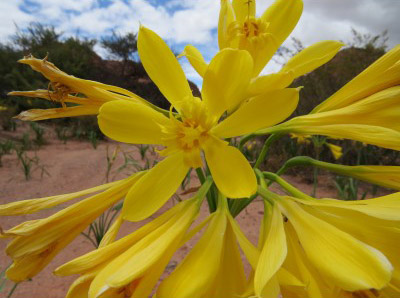

Bosque - foto: Mauricio Mattenet
foto: Mauricio Mattenet
foto: Mauricio Mattenet

Flor de amancay amarillo Parque Nacional Los cardones - foto: M. Elena Sánchez SIB
Mariposa Ochenta y ocho (Diaethria clymena janeira) - foto: Mueller SIB
La Administración de Parques Nacionales trabaja en conjunto con naciones fronterizas, provincias, comunidades locales, ONGs ambientalistas y productores en la implementación de este tipo de iniciativas. Ejemplo de esto son el Corredor Verde Misionero, el del Alto Bermejo, el Andino Norpatagónico y los del Gran Chaco Argentino.